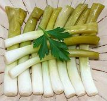

|
Pickled ScallionsUSA Virginia | ||||
| Serves: Effort: Sched: DoAhead: |
8 app ** 1+ day Must |
I have always had a problem with Scallions - I often need very fresh greens, but the greens aren't fresh for long, so I buy more. I wanted a solution other than tossing them, and found this pickle. It's really good, if the greens are good up to where they spread out. | |||
|
ar ------- 3 1-1/2 1-1/2 ------- 1/2 1/2 tt 1/2 ------- |
--- c c T --- t t t --- |
Scallions (1) -- Pickle mix Water Vinegar (2) Salt -- Spicing Peppercorns, black Mustard Seeds Dill sprigs Chili Flake (3) -------------- |
The amounts given here are sufficient for a 4 cup jar. Make - (1+ days - 15 min work)
|